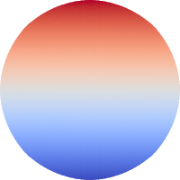
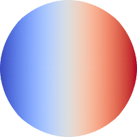
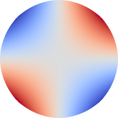
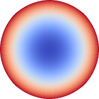
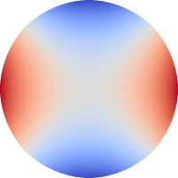
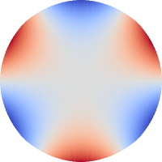
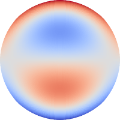
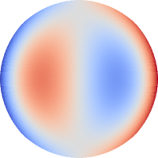
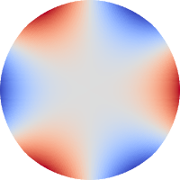

Reasons for developing
- This library was developed because I struggled to find open and fast enough implementation of simple function for Zernike polynomial calculation.
- Moreover, the exact equation for calculation isn't difficult to code in Python, but the exact equation gets really slow for high order polynomials. To overcome that, the recursive equations are implemented in this package instead of the exact ones.
-
However, anyway, there are exist many specifically implemented and well acknowledged libraries included Zernike polynomials calculation,
for example: zernike and
HCIpy.
Recently, I've found the solid library for numerical methods for Diffractive Optics, that also has the Zernike polynomials implementation: PyOptica
Representing a few Zernike profiles in a pyramid
The following images generated using the static method plot_sum_zernikes_on_fig() for single element in a list as polynomials list.
Hover mouse over the images (right) for getting polynomial name









Next steps
-
Implement calculation of derivativesDone in version 0.0.5 of the library -
Implement conversion from raw deformations on an unit pupil to set of Zernike polynomialsDone in ver. 0.0.6 - Implement more interactivity for these pages, make responsive the main page
-
Provide more tests for checking derivatives, values and initialization of polynomialsThere are 10 tests for run by the pytest library - Fixed issue with slow calculations of high orders polynomials, found that direct (exact) equation is sufficiently fast - ver. 0.0.8
- Found that the exact equation couldn't be used reliably for orders higher than 40th radial one - ver. 0.0.9